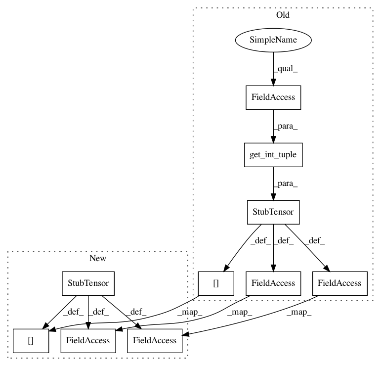

4b83c1070cebd0d996ba2cc69779dcb66d5d0032,autokeras/stub.py,,to_stub_model,#Any#Any#,16
Before Change
for node in input_nodes + [layer.output]:
if node not in tensor_dict:
tensor_dict[node] = StubTensor(get_int_tuple(node.shape))
node_count += 1
if isinstance(layer.input, list):
input_id = []
for node in layer.input:
input_id.append(tensor_dict[node])
else:
input_id = tensor_dict[layer.input]
output_id = tensor_dict[layer.output]
temp_stub_layer = to_stub_layer(layer, input_id, output_id)
if weighted:
temp_stub_layer.set_weights(layer.get_weights())
ret.add_layer(temp_stub_layer)
ret.inputs = [tensor_dict[model.inputs[0]]]
ret.outputs = [tensor_dict[model.outputs[0]]]
return ret
After Change
for node in input_nodes + [layer.output]:
if node not in tensor_dict:
tensor_dict[node] = StubTensor()
node_count += 1
if isinstance(layer.input, list):
input_id = []
for node in layer.input:
input_id.append(tensor_dict[node])
else:
input_id = tensor_dict[layer.input]
output_id = tensor_dict[layer.output]
temp_stub_layer = to_stub_layer(layer, input_id, output_id)
if weighted:
temp_stub_layer.set_weights(layer.get_weights())
ret.add_layer(temp_stub_layer)
ret.inputs = [tensor_dict[model.inputs[0]]]
ret.outputs = [tensor_dict[model.outputs[0]]]
return ret
In pattern: SUPERPATTERN
Frequency: 4
Non-data size: 10
Instances
Project Name: jhfjhfj1/autokeras
Commit Name: 4b83c1070cebd0d996ba2cc69779dcb66d5d0032
Time: 2018-05-29
Author: jhfjhfj1@gmail.com
File Name: autokeras/stub.py
Class Name:
Method Name: to_stub_model
Project Name: jhfjhfj1/autokeras
Commit Name: 7f30b2403fadc4eaad48ceaf6154a626f477f8c8
Time: 2018-05-26
Author: jin@tamu.edu
File Name: autokeras/stub.py
Class Name:
Method Name: to_stub_model